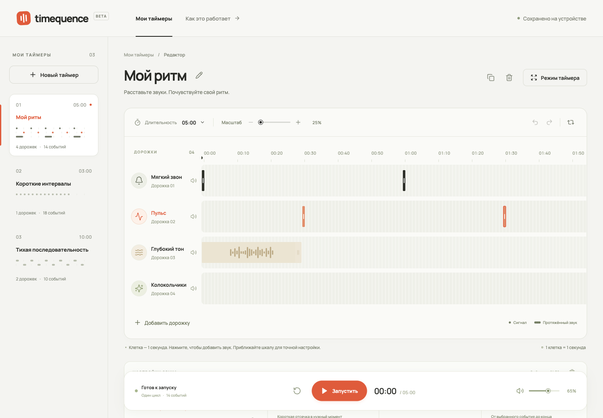
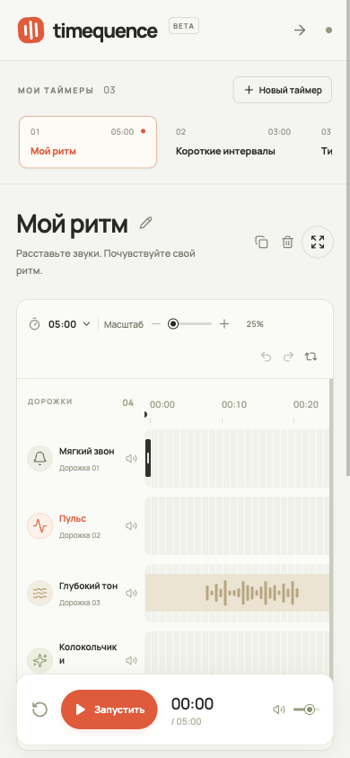

Timequence: предложения по дизайну
Проверены текущий редактор при 1440 × 1000 и 390 × 844, выбор события на телефоне и исходный референс.
Текущий экран компьютера · Текущий экран телефона


Направление
Светлый универсальный редактор звуковых последовательностей. Спокойная инструментальная эстетика референса: нейтральные серые поверхности, тёмная типографика, тонкий курсор, один оранжевый акцент. Manrope и существующий знак можно сохранить.
Режим: развитие существующего дизайна. Функции, секундная сетка, временные координаты и сохранённые данные остаются основой.
Параметры frontend-taste: DESIGN_VARIANCE=3, MOTION_INTENSITY=2, VISUAL_DENSITY=6. Строгая геометрия помогает читать время. Анимация служит обратной связью при действиях. Умеренная плотность освобождает место для событий, сохраняя читаемые подписи и удобные области нажатия.
Навык ориентирован на маркетинговые страницы. Его требования к героям, фотографиям, чередованию секций и эффектам прокрутки здесь неприменимы. Предложения ниже основаны на проверке самого редактора и референсе; замена библиотеки компонентов ради изменения внешнего вида не нужна.
Что обнаружено
- На компьютере шапка занимает 88 px, блок названия 105 px. Сам секвенсор начинается на отметке 258 px. Панель воспроизведения высотой 94 px перекрывает часть настроек внизу экрана.
- На телефоне до сетки помещаются шапка, отдельный список таймеров, заголовок, слоган и двухстрочная панель инструментов. Видно меньше рабочих дорожек, чем позволяет высота экрана.
- После выбора события на телефоне его свойства начинаются на отметке 898 px при высоте экрана 844 px. Пользователь не видит результат выбора без дополнительной прокрутки.
- Большая часть вторичных подписей набрана мелко. Сочетание бледного текста, оливковых оттенков и слабых границ снижает ясность и визуально уводит универсальный продукт в сторону wellness.
- Контраст белого текста с текущим оранжевым
#f14f2cсоставляет около 3,56:1. Для небольшого текста кнопок стоит выбрать более контрастное сочетание. - На масштабе 25% линия каждой секунды образует частую полосатую текстуру. Она конкурирует с узкими маркерами коротких сигналов.
Первый проход
- Собрать рабочую область по высоте окна. Компактная шапка 56-64 px, название 24-28 px, одна панель инструментов, сетка, контекстные свойства и управление воспроизведением. Прокрутка дорожек не должна прятать или перекрывать управление.
- Связать свойства с выбором. На компьютере компактная панель непосредственно под сеткой, входящая в расчёт высоты рабочей области. На телефоне нижняя раскрывающаяся панель по нажатию на событие, как в референсе. При закрытии сохраняются выделение и положение сетки. Поля: звук, тип, начало, длительность, повторы. Громкость относится к дорожке и должна быть отделена от свойств отдельного события.
- Упростить список таймеров. На компьютере более компактные строки с названием, длительностью и небольшой схемой. На телефоне переключатель текущего таймера открывает список; постоянно показывать все карточки над редактором не нужно.
- Убрать лишний текст. Слоган «Расставьте звуки. Почувствуйте свой ритм.», повторяющиеся подписи «Мои таймеры», декоративный BETA и подпись внизу не помогают редактированию. Подсказку о секундной сетке показывать при первом использовании и в справке. Состояние сохранения оставить доступным.
Визуальная настройка
- Базовые поверхности: нейтральный светло-серый и почти белый; основной текст графитовый. Оливковый убрать из общих фонов, подписей и ползунков. Цвета дорожек допустимы как функциональные различия, а не дополнительные цвета всех элементов управления.
- Оранжевый обозначает выбор и активное действие в сетке. Выбранное событие дополнительно получает чёткий контур и ручку изменения длины. Воспроизведение отмечается курсором и короткой подсветкой события, поэтому состояние не зависит только от цвета.
- Главная кнопка воспроизведения графитовая, как в референсе, с хорошо различимой иконкой. Сохранить понятную подпись и доступное название. Время сделать заметнее вторичных настроек.
- Единая геометрия: события 2 px, поля и обычные кнопки 6-8 px, панели 12 px. Круглые кнопки оставить для иконок и управления воспроизведением. Полная ширина событий внутри ячеек сохраняется.
- Названия дорожек и основных действий 13-14 px, вспомогательные подписи 12 px. Увеличение шрифта компенсируется удалением повторов и избыточных отступов, а не сжатием областей нажатия.
- Секундная точность сохраняется. При отдалении сильнее показывать крупные деления шкалы, ослаблять линии отдельных секунд; при приближении возвращать подробную сетку. Плотность линий не меняет привязку событий.
- У курсора воспроизведения тонкая тёмная линия с маркером сверху. Форма волны нужна протяжённым событиям; коротким сигналам достаточно ясного маркера.
- В библиотеке оставить разделение «Инструменты / Синтезатор», прослушивание и закреплённую кнопку выбора. Заголовок сократить до «Выбрать звук»; убрать повторяющий его надзаголовок и вступление.
Критерии следующей итерации
- На телефоне сетка начинается существенно выше и выбор события сразу открывает видимые свойства.
- Панель воспроизведения не перекрывает поля или последние дорожки: для неё зарезервировано место.
- На компьютере типичные действия с выбранным событием доступны без прокрутки всей страницы.
- События всё ещё занимают всю ширину соответствующей клетки или длительности и имеют радиус 2 px.
- Читаются названия, время и значения полей; проверены контраст, клавиатурный фокус и сенсорные области нажатия.
- Изменения масштаба и визуальной плотности не меняют время событий.
- Не появляются декоративные анимации, ненужные карточки или категории применения таймеров.
Это дизайн-разбор и предложения. Исходный код приложения в рамках этого разбора не изменялся.
Скриншоты текущего интерфейса

